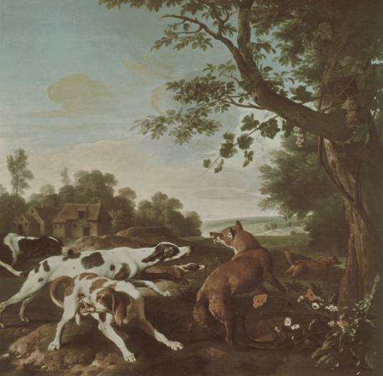

Down the foxhole

In our Property Law course, we are now reading about possession. Our case book mentioned Pierson v Post in a note, and that led me down a trail of reading this past week.
The facts
Lodowick Post was in pursuit of a fox. Another person, Jesse Pierson, killed the fox and took it for himself. The issue is whether Post has any property right in the fox that he was hunting.
The decision
The court held that “mere pursuit gave Post no legal right to the fox, but that he became the property of Pierson, who intercepted and killed him.” They seem to give two justifications for this approach. The first is a first-occupancy or first-possession justification:
the mortal wounding of such beasts, by one not abandoning his pursuit, may, with the utmost propriety, be deemed possession of him; since, thereby, the pursuer manifests an unequivocal intention of appropriating the animal to his individual use, has deprived him of his natural liberty, and brought him within his certain control (emphasis mine)
They also give a justification from enforcement efficiency: “for the sake of certainty, and preserving peace and order in society.” They predict that if they were to rule that mere pursuit gives rise to a property right, “it would prove a fertile source of quarrels and litigation.”
The dissent (Judge Henry Livingstone) disagrees and gives an argument based on judicial deference, labour, economic efficiency, and some interesting assumptions about the role of the fox hunt in New York in 1805.
First, Livingstone says the court should have just asked the “sportsmen” (the fox hunters) what would rule would have made sense in the context of their activity. (Today, this contextual approach has been embraced in the common law.
Regarding labour, economic incentives, and the role of the fox hunt, he says (emphasis and translations mine):
By the pleadings it is admitted that a fox is a “wild and noxious beast.” Both parties have regarded him, as the law of nations does a pirate, “hostem humani generis,” [enemy of mankind] and although “de mortuis nil nisi bonum,” [of the dead, say nothing but good] be a maxim of our profession, the memory of the deceased has not been spared. His depredations on farmers and on barn yards, have not been forgotten; and to put him to death wherever found, is allowed to be meritorious, and of public benefit. Hence it follows, that our decision should have in view the greatest possible encouragement to the destruction of an animal, so cunning and ruthless in his career. But who would keep a pack of hounds; or what gentleman, at the sound of the horn, and at peep of day, would mount his steed, and for hours together, “sub jove frigido,” [under cold Jupiter] or a vertical sun, pursue the windings of this wily quadruped, if, just as night came on, and his stratagems and strength were nearly exhausted, a saucy intruder, who had not shared in the honours or labours of the chase, were permitted to come in at the death, and bear away in triumph the object of pursuit?
Economic efficiency
Livingstone is arguing that there is social good in killing foxes, particularly because of their damage to farm animals. It’s important to encourage the fox hunt because it kills foxes. If a hunter who spent a bunch of effort on pursuing a fox might lose it to a “saucy intruder”, there will be fewer hunters willing to put in that effort, and there will be fewer foxes killed. So, let’s not reward that intruder with ownership of the fox.
These are not obvious moves. You might think—a lot of people think—that judges merely try to discover what the law is. And some people think that is a search for something called “natural law”: law that exists independently of our particular circumstances and societies—objective moral truth. Or, slightly less extreme, that judges are searching for a rule that is based on long-standing, even though socially contingent, ideas about what is right in a moral sense. This case makes it clear that judges sometimes make law, and they sometimes make law based on pragmatic concerns and economic concerns. I don’t know how often it was that judges considered these interests in 1805 or how explicitly they typically presented those justifications in their decisions.
Economic-efficiency arguments are tricky. You have to (at least implicitly) choose a “welfare” function: an accounting of things that you aim to have more or less of. A paper by Dharmapala and Pitchford actually works through the effect that the majority’s rule and Livingstone’s rule would have on the number of foxes killed. The results under their initial assumptions roughly match Livingstone’s intuition in his dissent. The paper is fairly readable even if you ignore every equation.
Thinking about property allocation from this economic perspective is only a tool for expressing reasons; it doesn’t provide reasons on its own. What you choose to capture in the welfare function can nearly answer the question for you. In Dharmapala and Pitchford’s article, they included the price per pelt, enjoyment of the hunt, damage averted to farm animals, investment by the hunter, and investment by the saucy intruder. What about other externalities? Enforcement/litigation costs might be significantly different under each of the rules. In fact, the majority argues this, and Dharmapala and Pitchford expand their welfare function to include enforcement costs later in the paper. This just highlights how the definition of the social welfare function is a political question. And, the maximization of it is contingent on actual facts, some of which might not actually be known or knowable. Why does the original hunter get zero positive enjoyment when the intruder gets the fox? Even assuming that the positive experience during the hunt is diminished when the intruder gets the fox, why does it cancel perfectly to zero?
It turns out that hunters found pleasure in the hunt even if they didn’t end up catching a fox. They also may have sought to maintain the fox population. A “bagged” (live) fox was worth more than a dead fox. Again, this demonstrates that economic arguments are only as convincing as the factors they consider.
How would the Coase theorem apply here? Perhaps the hunters would pay people to stay clear of their hunt. The hunters would have to pay the intruders as much money as they’d otherwise be able to fetch by freeloading. But this seems untenable, because more and more people could show up demanding payment to stay out of the way of the hunt. Historically, though, it seems that rather than the intruders being mere freeloaders, they were farmers just trying to ensure the foxes got killed, to prevent injury to their own animals. If the only people that were intruding were farmers at risk of losing animals to foxes, then a Coasian solution could actually play out. The hunters would pay the farmers for damage that happens to come to their farms due to foxes: a kind of tax/insurance for having a pure hunt. Another option would be payments to the owner(s) of the land on which the hunt takes place in exchange for the exclusive right to hunt. (Although, the fox in Pierson v Post was killed on a public beach.)
Application: cybersquatting
Where does this kind of situation occur today? The situation, abstractly, is that there are two groups of people seeking benefit from a limited resource. The resource is such that it takes some effort to extract value from that resource and the person to initiate that effort doesn’t necessarily gain exclusive possession of that value for quite some time, leaving room for a “saucy intruder” to cut in and freeload or hold hostage the value desired by the person who undertook the initial investment of effort.
Dharmapala and Pitchford argue that cybersquatting matches this scenario. Should a domain name be given to the first person to register it without regard to whether another has already developed a brand around that name? Or should a person who has put in the “honour and labour” of developing a company and brand have rights to the associated domain name? It turns out that in cases of pure cybersquatting (as opposed to dualing brands), the common law, and now legislation, has applied a rule analogous to Livingstone’s rule: the company with the developed brand gets the domain, rather than the cybersquatter.
Application: patent law
This analysis has also been applied to criticize some outcomes of patent law.
Patent law can result in a division of rights between an initial inventor and subsequent inventors that improve upon the original. An inventor can only protect, exclude, and exploit that which they’ve actually invented. Improvements are patentable separately by subsequent inventors. But a subsequent inventor having improved upon a previous patent could not sell the improved variant without a licence from the holder of the original patent when that improvement builds upon the original., And, the original inventor would need to get a licence from the improver in order to use their improvement.
The current law rewards early investment. We give patents to inventions that might not be market-ready. Patent law does not require commercial viability. However, patent law also rewards subsequent investment by other inventors. It might take less investment to take the invention from its earliest-patentable state to a commercially-viable state. Improvers can ride on the early success of the original patent-holder, but they can’t free-ride. The improver can’t actually sell the commercially-viable product if it still uses the original invention. However, the improver could exclude the original inventor from using the particular improvement that is patented by the improver. This could be used to extract a licensing fee from the original inventor in order to make, use, or sell the improver’s commercially-viable variant. Here, we see a mixed-allocation of rights in action.
But, what if we allocate rights too early? What if the original inventor gets rights while they are still in “mere pursuit” of the invention? As per Livingstone’s analysis, this will discourage the saucy intruder. Here, though, the saucy intruder is a would-be inventor, a would-be improver. We don’t want to discourage this activity. That would work against the goals of the patent system.
Oullette argues that this happens when we give people patents that are too speculative and that require undue experimentation on the part of anyone wanting to use the patent. These patents don’t do much to lower the barrier to further improvement, but they reward the original “inventor” with an unearned right to exclude. This discourages the flurry of improvement patents that one might normally see after a sufficiently disclosed invention is patented. She argues that this is a defect in the examination process.
How people use this case
I found an article by Luke Meier on using Pierson v Post as the first case in property law. This is almost a transcript of how he would teach his first few classes.
It seems that it’s common to use this as the first case in a property law course. We didn’t look at this case first. We started by thinking about what rights are part of the bundle of rights called property, how those are contextual, and the different roles that property rights fill in our society. Only now, seven weeks in, are we starting to look at what is required, or what should be required, to gain possession of a thing.
Notes
1. ↑ Pierson v Post, 3 Cai R 175 (NY SC 1805). There’s a good Wikipedia article too.
2. ↑ I’ve presented only the scant facts as outlined in the case. Much more has been learned about this case since then. See Angela Fernandez, “The Lost Record of Pierson v Post, the Famous Fox Case” (2009) 27:1 Law and History Review 149.
3. ↑ While I treat this dissent at face value, there is another dimension at play here that resists “straightforward interpretation”. Angela Fernandez sees this dissent as an example of a genre she calls “solemn foolery”. See Angela Fernandez, “The Ancient and Honorable Court of Dover: Serious Mock, Solemn Foolery, and Sporting Wit in Nineteenth-Century New York State” (2012) 7 Australian & New Zealand Law and History E-Journal 194.
4. ↑ “These rules are contextual in nature. They are crafted in response to the unique nature of the conduct they seek to regulate. Moreover, they are influenced by the custom and practice of each industry.” Popov v Hayashi, WL 31833731 (Cal Super Ct 2002).
5. ↑ Or maybe, they are always maximizing economic efficiency. See Richard A Posner, Economic Analysis of Law (Little, Brown, 1973). And, Richard A Posner, “The Economic Approach to Law” (1975) 53 Texas Law Review 757.
6. ↑ Dhammika Dharmapala & Rohan Pitchford, “An Economic Analysis of Riding to Hounds: Pierson v Post Revisited” (2002) 18:1 Journal of Law, Economics, & Organization 39.
7. ↑ Andrea McDowell, “Legal Fictions in Pierson v Post” (2007) 105:4 Michigan Law Review 735.
8. ↑ RH Coase, “The Problem of Social Cost” (1960) 3 Law and Economics 1.
9. ↑ McDowell, supra note 7.
10. ↑ Ibid.
11. ↑ Dharmapala & Pitchford, supra note 6.
12. ↑ Lara Larrimore Oullette, “Pierson, Peer Review, and Patent Law” (2016) 69 Vanderbilt Law Review 1825.
13. ↑ Arnold Silverman, “The Relationship Between Basic Patents and Improvement Patents” (1995) 47:1 JOM 50.
14. ↑ Douglas Applegate, “Patenting Improvements: The Costs of Making Patents Easily Available” (1992) 8:2 Santa Clara High Tech LJ 429.
15. ↑ Oullette, supra note 12.